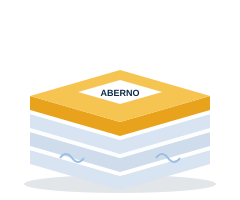
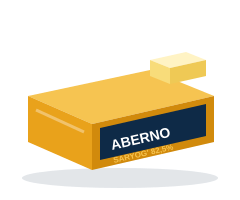
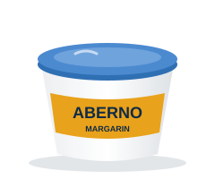
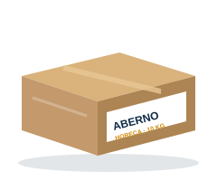

Xom ashyoEksport
Jumbo rulon — 1 qatlamli
Salfetka va boshqa tissue mahsulotlari ishlab chiqarish uchun asosiy xom ashyo.
- Zichlik16–18 g/m²
- RangOq
- KenglikBuyurtma bo'yicha
Salfetka xom ashyosi, salfetkalar, margarin va saryog' — chakana, ulgurji va eksport uchun turli qadoqlarda.
Salfetka va boshqa tissue mahsulotlari ishlab chiqarish uchun asosiy xom ashyo.
Yumshoq va mustahkam, premium salfetka hamda qutili salfetkalar uchun.

Uy, kafe va restoranlar uchun kundalik stol salfetkalari.

Karton qutidagi yumshoq kosmetik salfetkalar — uy va ofis uchun.
Restoran, kafe va oshxonalar uchun yirik ulgurji qadoqdagi salfetkalar.

Tabiiy qaymoqdan tayyorlangan, yuqori yog'lilikdagi klassik saryog'.
Kundalik iste'mol va pishiriqlar uchun an'anaviy saryog'.

Nonga surtish va taom tayyorlash uchun yumshoq margarin, idishda.

Novvoyxona va qandolatchilik sexlari uchun — xamir, krem va qatlama uchun.
Individual qadoq, o'lcham yoki o'z brendingiz ostida ishlab chiqarish (private label) bo'yicha so'rov qoldiring.